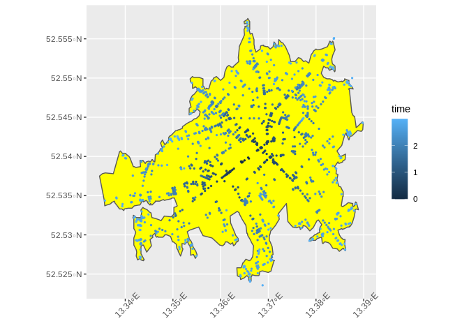

An R Interface to the GraphHopper Directions API
The purpose of {graphhopper} is to provide a quick and easy access to the GraphHopper Directions API. Responses can be converted into simple feature (sf) objects in a convenient way. The package is not a complete wrapper of the API. Currently it mainly supports the API also included in Graphhopper’s Open Source routing engine. New features will be added continuously.
Dive into the documentation here.
Installation
Install the release version from CRAN with:
install.packages("graphhopper")Install the development version from GitHub with:
# install.packages("remotes")
remotes::install_github("crazycapivara/graphhopper-r")Get started
Run your own GraphHopper instance (with data of Berlin):
Setup
library(graphhopper)
API_URL <- "http://localhost:8989"
gh_set_api_url(API_URL)
info <- gh_get_info()
info$version
#> [1] "2.0"
info$data_date
#> [1] "2020-12-04T21:42:03Z"
gh_bbox(info)
#> [1] 13.06979 52.33306 13.76352 52.67962Route
Get a route in Berlin:
start_point <- c(52.592204, 13.414307)
end_point <- c(52.539614, 13.364868)
(route <- gh_get_route(list(start_point, end_point)) %>%
gh_as_sf())
#> Simple feature collection with 1 feature and 2 fields
#> geometry type: LINESTRING
#> dimension: XY
#> bbox: xmin: 13.36501 ymin: 52.53949 xmax: 13.41483 ymax: 52.59234
#> CRS: EPSG:4326
#> time distance geometry
#> 1 697420 7541.438 LINESTRING (13.41422 52.592...
ggplot(data = route) +
geom_sf() +
theme(axis.text.x = element_text(angle = 45))
route$time
#> [1] 697420
via_point <- c(52.545461, 13.435249)
route2 <- gh_get_route(list(start_point, via_point, end_point))
gh_time_distance(route2)
#> $time
#> [1] 1168950
#>
#> $distance
#> [1] 12843.67
ggplot(data = gh_as_sf(route2)) +
geom_sf() +
theme(axis.text.x = element_text(angle = 45))
gh_points(route2) %>%
head()
#> lon lat gh_id
#> 1 13.41422 52.59234 0
#> 2 13.41321 52.59212 1
#> 3 13.41483 52.58964 2
#> 4 13.41539 52.59004 3
#> 5 13.41599 52.59032 4
#> 6 13.41942 52.59145 5
gh_instructions(route2)[, c("lon", "lat", "gh_id", "gh_end_id", "text", "distance")] %>%
head()
#> lon lat gh_id gh_end_id text
#> 1 13.41422 52.59234 0 1 Continue onto Buchholzer Straße
#> 2 13.41321 52.59212 1 2 Turn left onto Buchholzer Straße
#> 3 13.41483 52.58964 2 5 Turn sharp left onto Buchholzer Straße
#> 4 13.41942 52.59145 5 8 Turn right onto Grumbkowstraße
#> 5 13.42352 52.58588 8 15 Turn left onto Blankenburger Straße
#> 6 13.43019 52.58851 15 18 Turn right onto Pasewalker Straße
#> distance
#> 1 72.248
#> 2 296.761
#> 3 373.025
#> 4 678.120
#> 5 556.120
#> 6 619.849Shortest path tree
start_point <- c(52.53961, 13.36487)
points_sf <- gh_get_spt(start_point, time_limit = 180) %>%
gh_as_sf() %>%
dplyr::mutate(time = (time / 1000 / 60))
ggplot() +
geom_sf(data = points_sf, aes(colour = time), size = 0.5) +
theme(axis.text.x = element_text(angle = 45))
Also query previous nodes to plot the network:
(columns <- gh_spt_columns(
prev_longitude = TRUE,
prev_latitude = TRUE,
prev_time = TRUE
))
#> [1] "longitude" "latitude" "time" "distance"
#> [5] "prev_longitude" "prev_latitude" "prev_time"
lines_sf <- gh_get_spt(end_point, time_limit = 240, columns = columns) %>%
dplyr::mutate(mean_time = ((time + prev_time) / 2) / 1000 / 60) %>%
gh_spt_as_linestrings_sf()
ggplot() +
geom_sf(data = lines_sf, aes(color = mean_time), size = 1) +
theme(axis.text.x = element_text(angle = 45))
Isochrone
start_point <- c(52.53961, 13.36487)
isochrone_sf <- gh_get_isochrone(start_point, time_limit = 180) %>%
gh_as_sf()
ggplot() +
geom_sf(data = isochrone_sf, fill = "yellow") +
geom_sf(data = points_sf, aes(colour = time), size = 0.5) +
theme(axis.text.x = element_text(angle = 45))